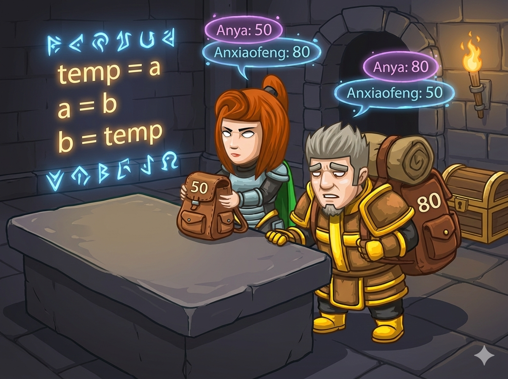

在幽深的地牢里，安小风背着沉重的行李，体力快耗尽了 😣。 好朋友安雅决定和他 交换行李，帮他分担重量！
但是，每个人只有两只手，怎么交换呢？他们找到了一张平整的 石桌。
1. 安雅先把行李放在 石桌 上。
2. 安雅背起安小风的重行李。
3. 安小风去拿 石桌 上的轻行李。
👉 任务： 编写程序，读入两个人的行李重量，利用“石桌”这个中间人，把两个数字交换过来！
这道题的核心是“交换变量”（Swap）。在编程中，要交换两个变量的值，通常需要第三个变量帮忙，就像故事里的“石桌”。
虽然 Python 有简便写法，但为了理解原理，我们这次也用“石桌法”：
安雅已经准备好石桌了，快用代码帮他们交换吧！
#include <iostream> using namespace std; int main() { // 1️⃣ 声明变量：a, b 是行李，c 是石桌 int a, b, c; // 2️⃣ 输入：读入两人的行李重量 cin >> a >> b; // 3️⃣ 交换魔法 (三步走) c = a; // 把 a 放到 c (石桌) 上 a = b; // 把 b 给 a b = c; // 把 c (石桌上的原a) 给 b // 4️⃣ 输出：交换后的结果 cout << a << " " << b << endl; return 0; }
# 1️⃣ 输入：一行读入两个整数 a, b = map(int, input().split()) # 2️⃣ 交换魔法 (三步走) c = a # 备份 a 到 c a = b # 把 b 的值给 a b = c # 把 c (原来的a) 给 b # 3️⃣ 输出：中间加个空格或逗号分隔 print(a, b)
⭐ 核心技巧： 记住口诀：c = a, a = b, b = c。就像把两个杯子里的水交换，必须先倒进第三个空杯子一样！